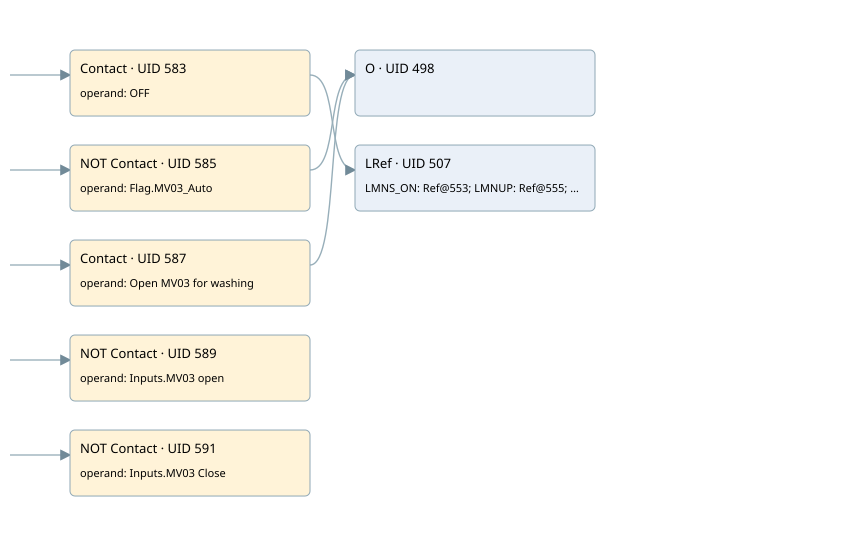

control pc02 moduling mv03 - not used
cyc_int5 ogni 100ms · 검색 색인 순서 12 · 원본 내부 NID 추정 12
백업 PLF 원본의 3107292 바이트 위치에서 복원한 XML. 검색 문서 15의 객체 키 16102200dc6a000000000000와 연결했다. 이름 해석 17/26개. 남은 RefId는 상수 또는 미해석 참조다.
연결 구조 다시 그리기
원본 Part/PCon/Wire를 이용한 연결도다. TIA 화면의 래더 배치 또는 실행 결과를 재현한 그림은 아니다. 핀 연결은 아래 표와 원본 XML을 기준으로 읽는다. 노드 위에 마우스를 두면 피연산자 이름을 볼 수 있다.

접점·코일·블록과 피연산자
| Part UID | Gate | Negated 핀 | 연결 피연산자 |
|---|---|---|---|
| 583 | Contact | operand = OFF | |
| 585 | Contact | operand | operand = Flag.MV03_Auto |
| 587 | Contact | operand = Open MV03 for washing | |
| 498 | O | ||
| 589 | Contact | operand | operand = Inputs.MV03 open |
| 591 | Contact | operand | operand = Inputs.MV03 Close |
| 507 | LRef | 호출 참조: RefId 113; LMNS_ON = RefId (RefId 없음) / ORef UID 553; LMNUP = RefId (RefId 없음) / ORef UID 555; LMNDN = RefId (RefId 없음) / ORef UID 557; PVPER_ON = RefId (RefId 없음) / ORef UID 559; CYCLE = T#100MS; SP_INT = Real_SPPC02; PV_IN = Real_PC02; PV_PER = RefId (RefId 없음) / ORef UID 564; GAIN = -4.0; TI = T#10S; DEADB_W = 2.0; PV_FAC = RefId (RefId 없음) / ORef UID 569; PV_OFF = RefId (RefId 없음) / ORef UID 571; PULSE_TM = T#200MS; BREAK_TM = T#5S; MTR_TM = T#3S; DISV = 2.0; QLMNUP = PID UP MV03; QLMNDN = PID down MV03; PV = RefId (RefId 없음) / ORef UID 579; ER = RefId (RefId 없음) / ORef UID 581 |
접점 경로를 펼친 조건식
Contact·O/A·비교기의 원본 연결을 읽기 쉽게 펼친 보조 해석이다. POWER는 전원 레일 시작을 뜻한다. 호출 블록·에지·타이머의 내부 동작과 다중 쓰기 순서는 이 표로 실행 검증하지 않았다. 미해석 핀과 RefId는 원문 연결표에서 확인한다.
| UID | 동작 | 대상 | 원본 접점 경로 | 내용 |
|---|
원본 배선 연결
| Wire UID | 동일 Wire 연결 끝점 |
|---|---|
| 593 | Powerrail {} ↔ Part 583.in ↔ Part 585.in ↔ Part 587.in ↔ Part 589.in ↔ Part 591.in |
| 547 | ORef 529 (OFF) ↔ Part 583.operand |
| 584 | Part 583.out ↔ Part 507.en |
| 548 | ORef 530 (Flag.MV03_Auto) ↔ Part 585.operand |
| 586 | Part 585.out ↔ Part 498.in1 |
| 549 | ORef 531 (Open MV03 for washing) ↔ Part 587.operand |
| 588 | Part 587.out ↔ Part 498.in2 |
| 550 | Part 498.out ↔ Part 507.COM_RST |
| 551 | ORef 532 (Inputs.MV03 open) ↔ Part 589.operand |
| 590 | Part 589.out ↔ Part 507.LMNR_HS |
| 552 | ORef 533 (Inputs.MV03 Close) ↔ Part 591.operand |
| 592 | Part 591.out ↔ Part 507.LMNR_LS |
| 554 | ORef 553 (RefId (RefId 없음)) ↔ Part 507.LMNS_ON |
| 556 | ORef 555 (RefId (RefId 없음)) ↔ Part 507.LMNUP |
| 558 | ORef 557 (RefId (RefId 없음)) ↔ Part 507.LMNDN |
| 560 | ORef 559 (RefId (RefId 없음)) ↔ Part 507.PVPER_ON |
| 561 | ORef 534 (T#100MS) ↔ Part 507.CYCLE |
| 562 | ORef 535 (Real_SPPC02) ↔ Part 507.SP_INT |
| 563 | ORef 536 (Real_PC02) ↔ Part 507.PV_IN |
| 565 | ORef 564 (RefId (RefId 없음)) ↔ Part 507.PV_PER |
| 566 | ORef 537 (-4.0) ↔ Part 507.GAIN |
| 567 | ORef 538 (T#10S) ↔ Part 507.TI |
| 568 | ORef 539 (2.0) ↔ Part 507.DEADB_W |
| 570 | ORef 569 (RefId (RefId 없음)) ↔ Part 507.PV_FAC |
| 572 | ORef 571 (RefId (RefId 없음)) ↔ Part 507.PV_OFF |
| 573 | ORef 540 (T#200MS) ↔ Part 507.PULSE_TM |
| 574 | ORef 541 (T#5S) ↔ Part 507.BREAK_TM |
| 575 | ORef 542 (T#3S) ↔ Part 507.MTR_TM |
| 576 | ORef 543 (2.0) ↔ Part 507.DISV |
| 577 | Part 507.QLMNUP ↔ ORef 544 (PID UP MV03) |
| 578 | Part 507.QLMNDN ↔ ORef 545 (PID down MV03) |
| 580 | Part 507.PV ↔ ORef 579 (RefId (RefId 없음)) |
| 582 | Part 507.ER ↔ ORef 581 (RefId (RefId 없음)) |
식별자 해석 근거 26개
| ORef UID | RefId | 이름 | IdentXmlPart 파일 | 해석 방법 |
|---|---|---|---|---|
| 529 | 53 | OFF | 0670-IdentXmlPart.xml | UID/RID + search-text + NID agreement |
| 530 | 99 | Flag.MV03_Auto | 0668-IdentXmlPart.xml | UID/RID + search-text + NID agreement |
| 531 | 100 | Open MV03 for washing | 0670-IdentXmlPart.xml | UID/RID + search-text + NID agreement |
| 532 | 127 | Inputs.MV03 open | 0668-IdentXmlPart.xml | UID/RID + search-text + NID agreement |
| 533 | 128 | Inputs.MV03 Close | 0668-IdentXmlPart.xml | UID/RID + search-text + NID agreement |
| 553 | (RefId 없음) | 미해석 RefId | 식별 선언 원본 참조 | 미해석 |
| 555 | (RefId 없음) | 미해석 RefId | 식별 선언 원본 참조 | 미해석 |
| 557 | (RefId 없음) | 미해석 RefId | 식별 선언 원본 참조 | 미해석 |
| 559 | (RefId 없음) | 미해석 RefId | 식별 선언 원본 참조 | 미해석 |
| 534 | 21 | T#100MS | 0667-IdentXmlPart.xml | literal candidate: UID/RID/NID + nearby named declarations + search-text agreement |
| 535 | 96 | Real_SPPC02 | 0669-IdentXmlPart.xml | UID/RID + search-text + NID agreement |
| 536 | 98 | Real_PC02 | 0669-IdentXmlPart.xml | UID/RID + search-text + NID agreement |
| 564 | (RefId 없음) | 미해석 RefId | 식별 선언 원본 참조 | 미해석 |
| 537 | 105 | -4.0 | 0667-IdentXmlPart.xml | literal candidate: UID/RID/NID + nearby named declarations + search-text agreement |
| 538 | 58 | T#10S | 0667-IdentXmlPart.xml | literal candidate: UID/RID/NID + nearby named declarations + search-text agreement |
| 539 | 22 | 2.0 | 0667-IdentXmlPart.xml | literal candidate: UID/RID/NID + nearby named declarations + search-text agreement |
| 569 | (RefId 없음) | 미해석 RefId | 식별 선언 원본 참조 | 미해석 |
| 571 | (RefId 없음) | 미해석 RefId | 식별 선언 원본 참조 | 미해석 |
| 540 | 25 | T#200MS | 0667-IdentXmlPart.xml | literal candidate: UID/RID/NID + nearby named declarations + search-text agreement |
| 541 | 27 | T#5S | 0667-IdentXmlPart.xml | literal candidate: UID/RID/NID + nearby named declarations + search-text agreement |
| 542 | 26 | T#3S | 0667-IdentXmlPart.xml | literal candidate: UID/RID/NID + nearby named declarations + search-text agreement |
| 543 | 22 | 2.0 | 0667-IdentXmlPart.xml | literal candidate: UID/RID/NID + nearby named declarations + search-text agreement |
| 544 | 106 | PID UP MV03 | 0670-IdentXmlPart.xml | UID/RID + search-text + NID agreement |
| 545 | 107 | PID down MV03 | 0670-IdentXmlPart.xml | UID/RID + search-text + NID agreement |
| 579 | (RefId 없음) | 미해석 RefId | 식별 선언 원본 참조 | 미해석 |
| 581 | (RefId 없음) | 미해석 RefId | 식별 선언 원본 참조 | 미해석 |
검색 코드 보조 자료
참조 명칭을 찾기 위한 자료이며 실행 순서나 AND/OR 관계는 위 연결표로 확인한다.
"off" cont_s "pid_mv03" t#100ms #real_sppc02 #real_pc02 -4.0 t#10s 2.0 t#200ms t#5s t#3s 2.0 "flag".mv03_auto "open mv03 for washing" "inputs"."mv03 open" "inputs"."mv03 close" "pid up mv03" "pid down mv03"